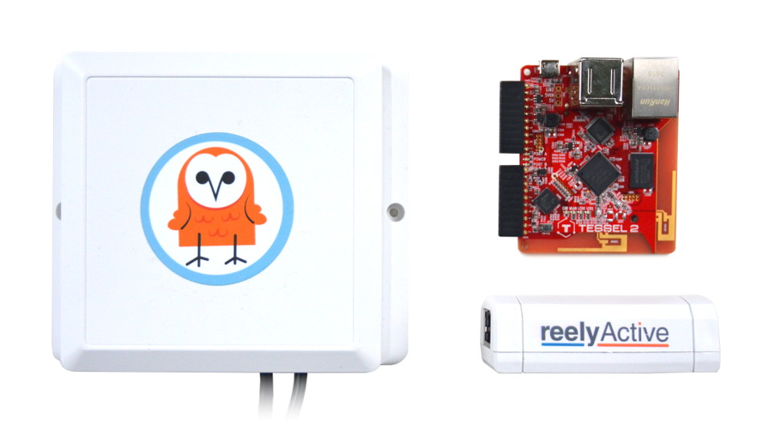
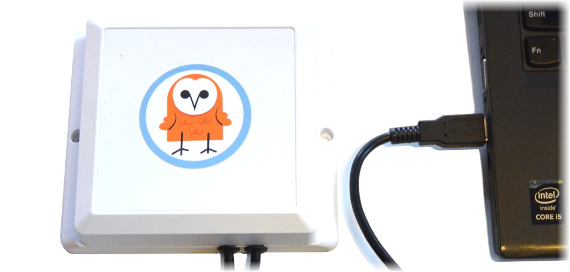

Configure an Owl-in-One
The reelyActive plug-and-play sensor
Our Owl-in-One is designed for ease of use: connect to power and network (via Ethernet) and the real-time data is automatically streamed to our Pareto service (instructions). This tutorial covers alternative use cases, the most common being connection to a WiFi network.
 Prerequisites
Node.js and the Tessel 2 CLI
The Owl-in-One is built on the Tessel 2 open hardware platform which, like our platform, runs Node.js software. To configure the Tessel 2 and/or update its software, you'll need both Node.js and the t2-cli package.
Install Node.js
Do you have Node.js installed?
Yes No UnsureYou're all set!
Proceed to install the t2-cli package
Install Node.js
Click the button below to access the Node.js downloads page and then select the LTS version (recommended).
Verify if you have Node.js installed
Open a terminal or command prompt, type node --version and press Enter.
If the output is something like vx.x.x, you do indeed have Node.js installed and can click Yes above. Otherwise click No above.
Install the Tessel 2 Command Line Interface
Do you have the t2-cli package installed?
Yes No UnsureYou're all set!
Proceed to configuration
Install the t2-cli package
From the command line, run npm install -g t2-cli to install the t2-cli package.
Should you encounter any errors, see the Tessel 2 Start Guide for instructions specific to your operating system.
Verify if you have the t2-cli package installed
Open a terminal or command prompt, type t2 version and press Enter.
If the output includes something like INFO t2-cli: x.x.x, you do indeed have the t2-cli package installed and can click Yes above. Otherwise click No above.
Connect to a WiFi network
Configure the Owl-in-One as a WiFi client
Connect the Owl-in-One to your computer via USB and wait half a minute for it to boot up.
 From the command line, type t2 list and you should see your Owl-in-One in the list with a name such as tesselActive-### where the number represents the last three digits of the ID on the back sticker.
Configure the WiFi with the following command, substituting the SSID and password as required:
t2 wifi -n "SSID" -p "password"
If the WiFi network is in range, and you correctly entered the SSID and password, expect to see INFO Wifi Connected on the command line. You can type t2 wifi for more details about the connection.
Owl-in-One and Pareto: Seamless Integration

Our Pareto platform combines the convenience of SaaS with plug-and-play hardware like the Owl-in-One.
Visit getpareto.com Log in to your account
What's next?
Buy an Owl-in-One, learn how to connect a websocket client to Pareto to use the real-time data, or return to the diyActive home page.